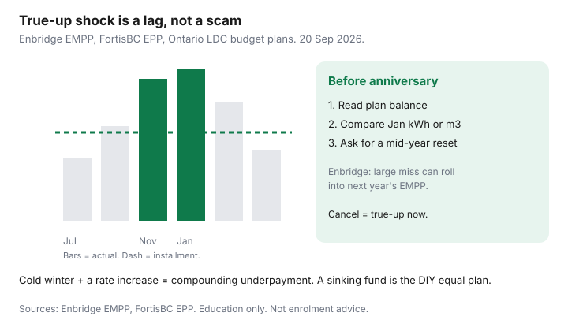

Utilities · Canada
How to Avoid Equal-Payment True-Up Shock on Canadian Utility Bills
The anniversary bill is what equal billing was supposed to prevent. Households did “everything right” — they enrolled, they paid on time — and still owe $420 because the installment was last year’s house. A true-up is not a scam. It is the reconciling line between installments and actual charges. The move is to see it forming, not to be surprised by it.
This is preventive management across Enbridge EMPP, FortisBC EPP, and Ontario LDC budget plans. Mechanics live in equal billing, FortisBC EPP, and Ontario budget billing.
Disclosure: Home energy monitors are an offer type that can show usage while the debit is flat. Saving Optimizer may earn a commission if we later add partner links. We do not currently claim monitor-brand or utility partnerships. This is education, not enrolment advice.
Key takeaways
- True-ups happen when the estimate was low: colder HDD, a rate increase, a new EV or heat pump, a baby, a dead filter — or last year’s occupant.
- Every bill has (or the portal has) a plan balance / cumulative difference. Read it in May, not the week the anniversary PDF lands.
- After a renovation, EV, or equipment swap, request a mid-year installment reset. Do not wait for their quarterly or annual clock.
- Enbridge (used 20 Sep 2026): differences that exceed an average monthly bill can roll into next year’s EMPP. That is how a “small” miss becomes a higher debit forever.
- If you hate true-ups more than winter spikes, stay on actual billing and run a sinking fund. Same dollars, you hold the float.
Why true-ups happen even when you “did everything right”
The utility estimated a year, divided by 12, and charged the installment. You paid it. Winter still happened. Four compounding misses:
- Wrong history — new mover, new heat pump, new WFH, previous tenant’s 23°C.
- Wrong weather — a polar-vortex year after a mild year that set the installment.
- Wrong rates — OEB RPP steps, a FortisBC quarterly gas cost change, an Enbridge QRAM. The installment lags.
- Wrong machine — dirty filter, dying furnace, windows left on tilt-and-turn. Use jumped; the debit did not.
You can do everything right on payments and still underpay physics. That is the product.

Reading the cumulative balance line before plan anniversary
On Enbridge, look for EMPP installment versus actual gas costs and the running difference. FortisBC Account Online shows payments versus use. Ontario LDC portals vary; Toronto Hydro’s high-bill page even lists “EPP annual reconciliation” as a reason a single bill jumped.
A growing underpayment in April, after winter, is information. A growing overpayment after a Florida January is information too — you are lending the utility money until they credit you. Write the number on a calendar 60 days before the plan anniversary.
Requesting a mid-year installment reset after a renovation or EV
Hydro One’s Budget Billing FAQ: if household use changed significantly, contact them for an account review; the amount may go up or down; you cannot lower it online, only request a review. FortisBC gas already reviews every three months — still call if you added a heat pump or suite. Enbridge reviews periodically and will adjust if you are off track; do not assume they noticed the Level 2 charger.
Ask for a new installment based on the last 90 days plus a weather-normal winter, not “leave it, we will see.” Get the ticket number.
Cold winter + rate increase = compounding underpayment risk
A 15% colder winter and a commodity step-up do not average out. They stack. Enbridge is explicit that they use history, current rates, and weather reports — and that any cost difference above an average monthly bill can roll into the next EMPP year. FortisBC gas can nudge quarterly; electricity can hide a miss until month 12 and then bake it into the next debit.
If both gas and hydro are on equal plans, you can get two anniversary surprises in the same season. Stagger the mental calendar. The Enbridge spike guide is the gas anatomy; this page is the payment-shape defence.
Building a sinking fund if you prefer actual billing
Equal billing is a sinking fund the utility holds. You can hold it yourself:
- Average the last 12 actual bills (or the OEB / FortisBC calculator’s annual estimate).
- Each month, move that average into a separate savings bucket on payday.
- Pay the actual bill from the bucket. July leftover stays. January draws it down.
- You see every kWh and m³. There is no anniversary novel.
This is the right move if you just changed equipment, you are selling, or you will not open the portal. It is the wrong move if a $400 January bounces rent. Then enrol, and still open the graph.
Scripts for calling the utility before the anniversary bill
Keep it boring. You want a review, not a fight.
- “I’m on [EMPP / EPP / Budget Billing]. Can you read me the current plan balance and the anniversary month?”
- “We installed a [heat pump / EV charger / suite] in [month]. Please reset the installment using recent use, not last year’s machine.”
- “The running difference is over one average month. I would like the installment raised now so it does not roll into next year.”
- “If I cancel today, what would be due on the next bill? I may prefer a review instead.”
If you cannot pay even the installment, that is arrears / LEAP / a payment arrangement — not a reason to rage-cancel and hope. Ontario winter disconnection rules pause the cut-off, not the balance.
Sources & date stamps
- Enbridge Gas Ontario, Equal Monthly Payment Plan — history + rates + weather; periodic review; rollover of differences above an average month; cancel caution (used 20 Sep 2026).
- FortisBC, Equal Payment Plan — gas quarterly review; electricity 12-month review; year-end charge or credit.
- Toronto Hydro / Hydro One equal-payment and budget-billing pages — annual vs month-6/9 reviews; cancel reconcile.
- OEB — gas utilities must offer equal monthly payment plans and review at least once per calendar year.
Frequently asked questions
Is a true-up a late fee?
No. It is the difference between installments and actual charges. You may get a credit, a bill, or a rollover into next year’s plan.
How early should I check the balance?
Every quarter, and 60 days before the anniversary. A May underpayment after a hard winter is the warning, not the August PDF.
Will the utility reset my installment if I ask?
Usually they will review. Hydro One will not let you type a lower number online. Bring the life-change (EV, reno, new heat).
Should I cancel to avoid the anniversary bill?
Cancelling often makes the balance due now. Ask what would be owing, then choose review vs cancel vs stay.
What is a sinking fund?
You average the year and save that amount yourself, then pay actual bills from the bucket. Same dollars, you keep the float and the usage visibility.